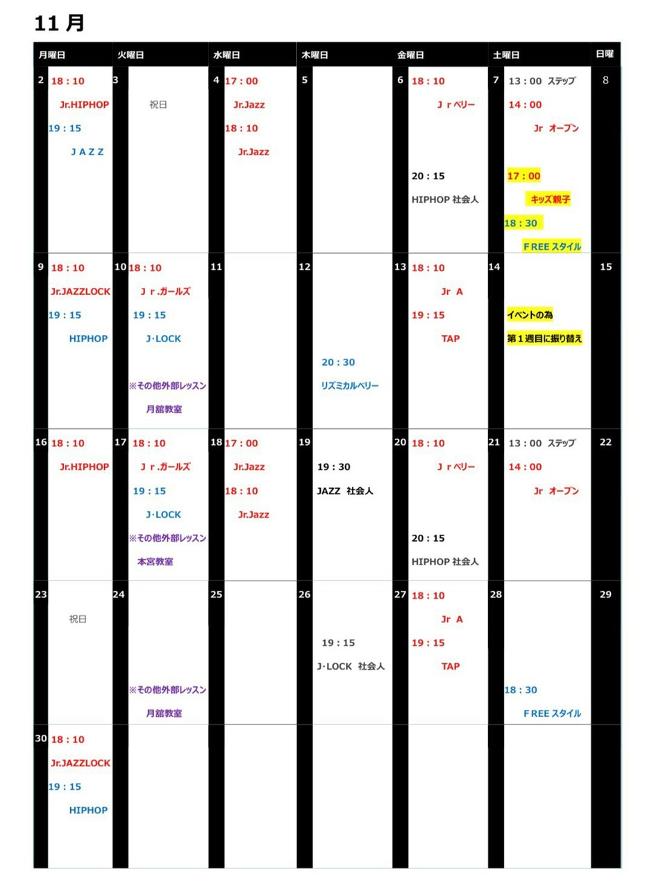

LESSON SCHEDULE
レッスンスケジュール
毎月の予定と、クラスのご案内。振替や変更も、こちらから確認できます。
MONTHLY SCHEDULE
月間表を大きく見る11月のレッスン予定
ご提供スケジュールの掲載例添付いただいた11月の表をもとに作成しています。年は確認中です。最新の予定は公式LINEでご確認ください。
11月14日はイベント参加のため、第2土曜日のレッスンを第1土曜日へ振り替えます。
祝日による変則日程があります。月間表をご確認ください。
11月14日はイベント参加のため、第2土曜日のレッスンを第1土曜日へ振り替えます。
祝日による変則日程があります。月間表をご確認ください。

DAY BY DAY
日付別にチェック
2月曜日
Jr. HIPHOP
JAZZ
3火曜日
祝日
4水曜日
Jr. Jazz
Jr. Jazz
6金曜日
Jr. ベリー
HIPHOP 社会人
7土曜日
ステップ
Jr. オープン
キッズ親子第2土曜日から振替
FREEスタイル第2土曜日から振替
9月曜日
Jr. JAZZ LOCK
HIPHOP
10火曜日
Jr. ガールズ
J・LOCK
外部レッスン / 月舘教室
12木曜日
リズミカルベリー
13金曜日
Jr. A
TAP
14土曜日
イベントのため、レッスンは第1土曜日へ振替
16月曜日
Jr. HIPHOP
JAZZ
17火曜日
Jr. ガールズ
J・LOCK
外部レッスン / 本宮教室
18水曜日
Jr. Jazz
Jr. Jazz
19木曜日
JAZZ 社会人
20金曜日
Jr. ベリー
HIPHOP 社会人
21土曜日
ステップ
Jr. オープン
23月曜日
祝日
24火曜日
外部レッスン / 月舘教室
26木曜日
J・LOCK 社会人
27金曜日
Jr. A
TAP
28土曜日
FREEスタイル
30月曜日
Jr. JAZZ LOCK
HIPHOP
CLASS GUIDE
通常クラスのご案内
掲載内容についてこのページの通常クラスの曜日・時間は2023年1月の旧サイト掲載内容をもとに整理しています。最新の内容は、お申し込み前に公式LINEでご確認ください。
| 曜日 | 時間 | クラス | 対象・レベル | 開催 |
|---|---|---|---|---|
| 月 | 19:15–20:15 | JAZZ | ベーシック | — |
| 月 | 20:30–21:30 | HIPHOP | ベーシック | — |
| 火 | 19:15–20:15 | JAZZ LOCK | ベーシック | 月3回 |
| 火 | 20:30–21:30 | JAZZ FUNK | 進級クラス | 月1〜2回 |
| 水 | 20:35–21:35 | HIPHOP | 進級クラス | 月2回 |
| 木 | 19:15–20:15 | JAZZ LOCK | 進級クラス | 第2・4 |
| 木 | 20:30–21:30 | リズミカルベリー | ベーシック | 第2・4 |
| 金 | 19:15–20:00 | TAP | ベーシック | 月2回 |
| 金 | 20:30–21:30 | LYRICAL | 進級クラス | 月2回 |
| 金 | 20:30–21:30 | 大人のはじめてHIPHOP | ベーシック | 第1・3 |
| 土 | 18:30–19:30 | FREE STYLE | ベーシック | 第2・4 |
| 月 | 18:10–18:55 | Jr. HIPHOP② | 未就学児〜小学生 | 第1・3 |
| 火 | 18:10–18:55 | Jr. ガールズB① | 未就学児〜小学生 | 第1・3 |
| 水 | 18:10–18:55 | Jr. JAZZ | 未就学児〜小学生 | 月2回 |
| 金 | 18:10–18:55 | Jr. ベリー | 未就学児〜小学生 | 第1・3 |
| 金 | 18:10–18:55 | Jr. A | 未就学児〜小学生 | 第2・4 |
| 金 | 19:15–20:00 | Jr. C | 進級クラス | 第1・3 |
| 金 | 19:15–20:00 | TAP | 小学生〜一般 | 第2・4 |
| 土 | 14:00–14:45 | Jr. オープン | 未就学児〜小学生 | 月3回 |
| 土 | 17:00–17:45 | キッズ親子クラス | 2歳〜小学生・ご家族 | 第2・4 |
| 土 | 13:00–13:45 | ステップクラス | 障がいのある方向け | 第1・3 |
| 木 | 19:30–20:30 | 霊山教室 / リズムダンス | 大人 | 第2・4 |
| 火 | 18:30–19:15 | 月舘教室 / キッズジュニアダンス | 未就学児〜小学生 | 第2・4 |
| 火 | 19:30–20:15 | 月舘教室 / ジュニアHIPHOP | 小学5年生〜中高生 | 第2・4 |
| 火 | 18:00–18:45 | 本宮教室 / ジュニアHIPHOP | 未就学児〜小学生 | 第1・3 |
| 火 | 13:00–14:00 | ヨークカルチャーセンター / TAP | 第1・3 |
通常クラスは2023年1月の旧サイト掲載内容です。月間予定を優先し、現在の受講条件・進級クラスについてはスクールへご確認ください。外部教室は本校と別会場です。
YOUR FIRST STEP最初の一歩は、
最初の一歩は、
「ちょっと気になる」から。
見学・体験レッスンのご相談は、公式LINEへ。
年齢や気になるジャンル、希望の曜日をお知らせください。
スケジュールやスクールからのお知らせも、公式LINEでご案内しています。

スマートフォンで読み取って
公式LINEへ